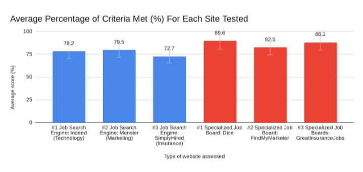
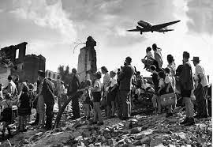

Research on the "Comparison of Job Search Engines and Specialized Job Boards Based on Information Quality of Employment Opportunities"
This is my most recent project which included me looking at different job search engines and specialized job boards to find which one had the better quality of information. A website evaluation criteria was used to conduct this research. The research was part of work done for the Discovery magnet program at my school. I created a research paper and presented this topic in a few Science Fairs.
National History Day Project on the Berlin Blockade and Airlift
I participated in the National History Day Competition with this project that looked at the triumph and tragedy associated with the Berlin Blockade and Airlift. I created a website to present these ideas. The website "Berlin Blockade and Airlift" that I created is linked.